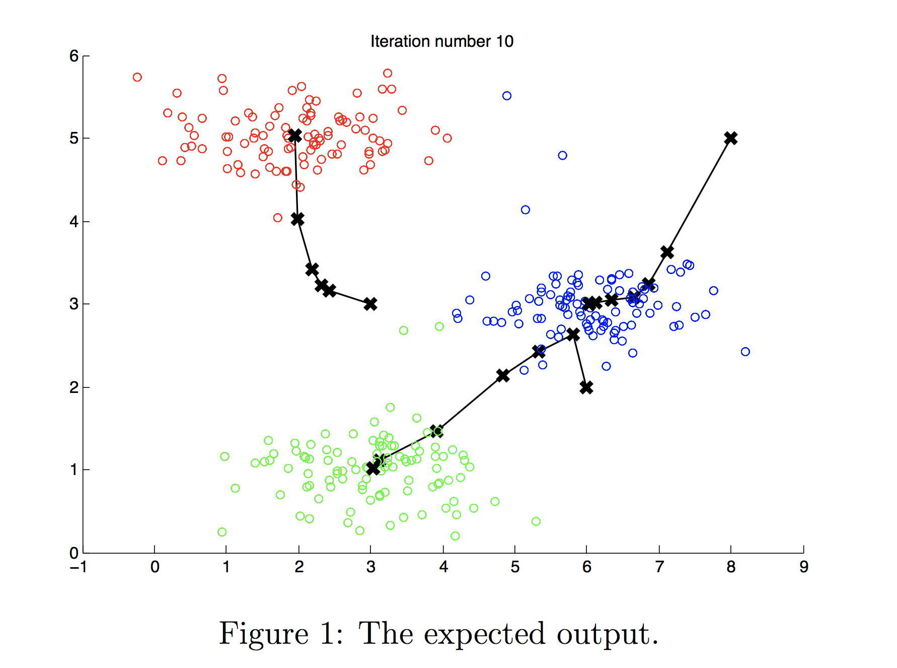

K-means clustering
Không có nhãn, chỉ có dữ liệu. Làm sao tự tìm ra các nhóm tự nhiên? K-means trả lời bằng hai bước lặp đi lặp lại cực kỳ đơn giản.
Phân cụm là gì?
Cho tập \(\{\mathbf{x}^{(1)}, \dots, \mathbf{x}^{(m)}\}\) không có \(y\). Phân cụm gom các điểm giống nhau vào cùng một nhóm. Ứng dụng: phân khúc khách hàng, nhóm bài báo cùng chủ đề, phân tích dữ liệu gen, nén ảnh…
Thuật toán K-means
Bước 1: tìm tâm gần nhất
Hàm mình viết trong lab (dùng ba vòng lặp, rất tường minh):
def find_closest_centroids(X, centroids):
K = centroids.shape[0]
idx = np.zeros(X.shape[0], dtype=int)
for i in range(X.shape[0]):
min_dist = float('inf')
min_index = -1
for j in range(K):
dist = 0
for k in range(X.shape[1]):
dist += (X[i, k] - centroids[j, k]) ** 2
if dist < min_dist:
min_dist = dist
min_index = j
idx[i] = min_index
return idxPhiên bản vector hoá dùng broadcasting — tính toàn bộ ma trận khoảng cách \(m \times K\) một lần:
def find_closest_centroids_vec(X, centroids):
# X[:, None, :] có shape (m, 1, n); centroids[None] có shape (1, K, n)
d = ((X[:, None, :] - centroids[None, :, :]) ** 2).sum(axis=2) # (m, K)
return np.argmin(d, axis=1)Bước 2: tính lại tâm
def compute_centroids(X, idx, K):
m, n = X.shape
centroids = np.zeros((K, n))
for k in range(K):
points = X[idx == k] # mọi điểm thuộc cụm k
if len(points) > 0:
centroids[k] = points.mean(axis=0)
return centroids
Hàm chi phí (distortion)
Bước 1 cực tiểu \(J\) theo \(c\) (giữ \(\mu\) cố định); bước 2 cực tiểu \(J\) theo \(\mu\) (giữ \(c\) cố định). Vì vậy \(J\) không bao giờ tăng qua các vòng lặp — nếu tăng, code có bug. K-means chắc chắn hội tụ, nhưng có thể vào cực tiểu cục bộ.
Khởi tạo ngẫu nhiên
Cách khởi tạo trong lab: chọn ngẫu nhiên \(K\) điểm dữ liệu làm tâm ban đầu.
def kMeans_init_centroids(X, K):
randidx = np.random.permutation(X.shape[0])
return X[randidx[:K]]Vì kết quả phụ thuộc vào khởi tạo, hãy chạy K-means nhiều lần (50–1000 lần) với khởi tạo khác nhau và giữ kết quả có \(J\) nhỏ nhất. Bấm “Khởi tạo lại tâm” trong demo vài lần để thấy đôi khi hai tâm “tranh nhau” một cụm và bỏ rơi cụm khác.
Chọn K
- Phương pháp khuỷu tay (elbow): vẽ \(J\) theo \(K\), chọn điểm mà đường cong “gập” lại. Thực tế đường cong thường mượt, không có khuỷu rõ ràng.
- Theo mục đích sử dụng (Andrew Ng khuyên): chọn K dựa trên bài toán hạ nguồn. Ví dụ may áo: K = 3 (S, M, L) hay K = 5 (XS–XL) tuỳ chi phí sản xuất và độ vừa vặn mong muốn.
- Không chọn K bằng cách cực tiểu \(J\) — \(J\) luôn giảm khi K tăng.
Ứng dụng: nén ảnh
Phần hai của lab nén một bức ảnh chim 128×128 pixel. Mỗi pixel có 3 kênh màu RGB 8-bit, tức 24 bit/pixel và hàng nghìn màu khác nhau. Coi mỗi pixel là một điểm trong không gian 3 chiều, chạy K-means với K = 16:
original_img = plt.imread('bird_small.png') # (128, 128, 3), giá trị trong [0, 1]
X_img = original_img.reshape(-1, 3) # (16384, 3): mỗi hàng là một pixel
K = 16
initial_centroids = kMeans_init_centroids(X_img, K)
centroids, idx = run_kMeans(X_img, initial_centroids, max_iters=10)
# thay mỗi pixel bằng màu tâm cụm của nó
X_recovered = centroids[idx, :].reshape(original_img.shape)Sau nén, chỉ cần lưu bảng 16 màu (16 × 24 bit) và mỗi pixel một chỉ số 4 bit: \(16 \times 24 + 128 \times 128 \times 4 = 65.920\) bit so với \(128 \times 128 \times 24 = 393.216\) bit — nén khoảng 6 lần, ảnh vẫn nhận ra rõ.
- K-means++: chọn tâm đầu tiên ngẫu nhiên, các tâm sau được chọn với xác suất tỉ lệ với bình phương khoảng cách tới tâm gần nhất → các tâm ban đầu trải đều, hội tụ nhanh và tốt hơn. Mặc định trong
sklearn.cluster.KMeans. - Silhouette score: đo mức một điểm gần cụm của nó hơn cụm khác bao nhiêu (−1 đến 1) — dùng để so sánh các giá trị K.
- K-means giả định cụm có dạng “tròn” và kích thước tương đương. Với cụm hình dạng tuỳ ý dùng DBSCAN (dựa trên mật độ, tự tìm số cụm, phát hiện nhiễu); với cụm hình elip dùng Gaussian Mixture Model (phân cụm “mềm”, mỗi điểm có xác suất thuộc từng cụm); muốn cây phân cấp dùng hierarchical clustering.
from sklearn.cluster import KMeans
km = KMeans(n_clusters=16, n_init=10).fit(X_img)
X_recovered = km.cluster_centers_[km.labels_]- C3_W1 Practice Lab — K-means Clustering (graded:
find_closest_centroids,compute_centroids)
Từ ghi chú Notion
Dữ liệu \(\{(1,1),(2,1),(4,3),(5,4),(3,2),(6,6)\}\), khởi tạo \(C_1 = (1,1)\), \(C_2 = (6,6)\).
| Điểm | Khoảng cách tới C₁ | Khoảng cách tới C₂ | Cụm |
|---|---|---|---|
| (1,1) | 0 | 7.07 | C₁ |
| (2,1) | 1.00 | 6.40 | C₁ |
| (4,3) | 3.61 | 3.61 | C₁ (hoà, chọn tâm đầu tiên) |
| (5,4) | 5.00 | 2.24 | C₂ |
| (3,2) | 2.24 | 5.00 | C₁ |
| (6,6) | 7.07 | 0 | C₂ |
Dời tâm: \(C_1 = \left(\frac{1+2+4+3}{4}, \frac{1+1+3+2}{4}\right) = (2.5, 1.75)\), \(C_2 = (5.5, 5)\). Gán lại: (4,3) cách \(C_1\) 1.95 và cách \(C_2\) 2.50 nên vẫn thuộc \(C_1\). Không điểm nào đổi cụm, thuật toán hội tụ với \(C_1 = \{(1,1),(2,1),(3,2),(4,3)\}\) và \(C_2 = \{(5,4),(6,6)\}\).
Bản ghi gốc liệt kê cụm cuối là \(\{(1,1),(2,1),(3,2)\}\) và \(\{(4,3),(5,4),(6,6)\}\), và ghi khoảng cách (3,2)→C₂ là 5.39. Chạy lại phép tính cho thấy khoảng cách đúng là 5.00 và (4,3) ở lại cụm 1 như trên.
Nguồn Notion: K-means
WCSS (Within-Cluster Sum of Squares) là tổng bình phương khoảng cách từ mỗi điểm tới tâm cụm của nó, chính là distortion nhân \(m\). Trong scikit-learn, WCSS nằm ở kmeans.inertia_. WCSS luôn giảm khi K tăng (K = số điểm thì WCSS = 0), nên ta tìm “điểm gập” nơi WCSS bắt đầu giảm chậm. Nếu không có điểm gập rõ, kết hợp Silhouette Score hoặc Gap Statistic.
from sklearn.cluster import KMeans
from sklearn.datasets import make_blobs
X, _ = make_blobs(n_samples=300, centers=4, cluster_std=1.0, random_state=42)
wcss = []
for k in range(1, 11):
kmeans = KMeans(n_clusters=k, random_state=0).fit(X)
wcss.append(kmeans.inertia_)
plt.plot(range(1, 11), wcss, marker='o')
plt.xlabel('Number of Clusters (k)'); plt.ylabel('WCSS'); plt.title('Elbow Method')
plt.show() # điểm gập ở k = 4Ứng dụng phân cụm mình ghi: nhóm tin tức tương tự, phân khúc thị trường, phân tích DNA, phân tích dữ liệu thiên văn, phân đoạn ảnh. Các thuật toán khác: Hierarchical (agglomerative / divisive) và DBSCAN (theo mật độ, chịu được nhiễu).
Nguồn Notion: CLUSTERING · K-means
Ghi nhớ
- K-means lặp hai bước: gán điểm về tâm gần nhất → dời tâm về trung bình cụm.
- Distortion J không bao giờ tăng; chạy nhiều lần với khởi tạo khác nhau để tránh cực tiểu cục bộ.
- Chọn K theo mục đích sử dụng; elbow chỉ là gợi ý.
Tự kiểm tra
Một cụm không có điểm nào được gán. Xử lý thế nào?
Phổ biến nhất là bỏ cụm đó (còn K−1 cụm), hoặc khởi tạo lại tâm đó ngẫu nhiên. Code trong lab giữ tâm ở vị trí 0 nếu cụm rỗng — nên kiểm tra trường hợp này.
Có cần chuẩn hoá đặc trưng trước khi chạy K-means không?
Thường là có — K-means dựa trên khoảng cách Euclid, đặc trưng có thang đo lớn sẽ áp đảo. Riêng nén ảnh thì không cần vì ba kênh RGB đã cùng thang [0, 1].